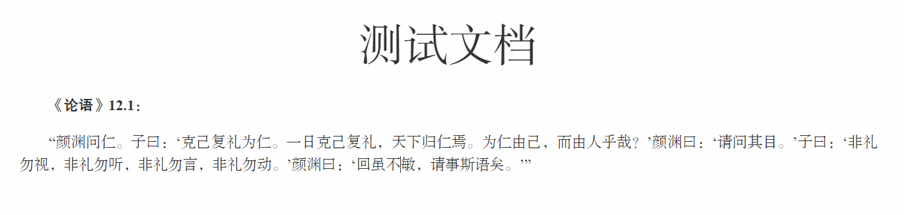
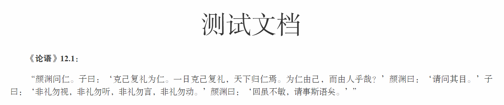

中文引号的显示问题的解决！以Typora的Whitey主题和Hexo的Ocean主题为例。
1. 问题的由来
使用普通的主题时，Typora可以正常显示中文，默认字体为微软雅黑。可以通过修改css主题配置文件获得更优雅的中英文显示：
body {
font-family: Times, 宋体;
...
}
详情可参见“Typora：自定义中文字体与导出PDF无法加粗问题的解决”一文。
中文和西文的句号、逗号、感叹号、问号等标点符号，都对应着各不相同的Unicode字符，如中文句号为U+3002，而西文句号为U+002e。
然而，中文和西文的双引号对应的却是同样的一对Unicode字符（U+201c和U+201d），其形态上的区别则交由字体去渲染。单引号也是类似的情形（U+2018和U+2019）。
这就导致了一个问题：Typora在渲染文本时会优先使用西文字体（在本例中为Times系列字体）——而非中文字体（在本例中为宋体）渲染引号，其显示效果不能令人满意：

删去配置文件中的西文字体，或将西文字体移至中文字体之后，并不能解决问题。原因在于，一般的中文字体中都会为西文字符设计字形，但设计得又普遍效果不佳。如果删去西文字体，西文文本（包括阿拉伯数字）的显示效果将大受影响；如果将西文字体移至中文字体之后，则由于中文字体已经为西文字符设计了字形，所以根本不会触发排在后面的西文字体。
如何在保持中文和西文均有良好渲染效果的基础上，改善中文引号的显示呢？
2. 问题的解决：使用“unicode-range”选项
解决该问题的基本思路是：为引号设计一个专属的字体族。
关于字体族设置，参见“Typora：自定义中文字体与导出PDF无法加粗问题的解决”。
继续以该文改编的whitey_cjk.css主题为例。为引号设计专属字体族：
@font-face {
font-family: "Quotation Mark";
font-style: normal;
font-weight: normal;
src: url(whitey_cjk/FZKTK.TTF);
unicode-range: U+2018, U+2019, U+201c, U+201d;
}
@font-face {
font-family: "Quotation Mark";
font-style: normal;
font-weight: bold;
src: url(whitey_cjk/FZHT_Document.TTF);
unicode-range: U+2018, U+2019, U+201c, U+201d;
}
使用unicode-range选项，指定该字体族仅用于渲染指定的Unicode字符。
同时优先启用该字体族：
body {
font-family: "Quotation Mark", Times, "My Font Family";
...
}
重启typora，选择该主题，即可完美渲染中文引号：

唯一的问题是，使用该主题时，西文引号也会被渲染为中文的样式。此问题不容易解决。原因在于，既然Unicode已经不尽如人意地为中文和西文引号指定了同样的代码，那么要想自动为中文和西文显示不同的引号样式，逻辑上就必须要识别上下文使用的语言。这似乎并不是几行简单的代码就能完成的任务。
3. 在Hexo上实现“unicode-range”
类似地，在使用Hexo部署博客时也可以实现“unicode-range”功能。
以Ocean主题为例。首先准备好想要的字体文件（这里以“方正书宋_GBK”为例）。
woff格式为“网页开放字体格式”，更适合网页加载。可以使用网上的在线转换工具，把ttf格式转为woff。更严格地来说，最好再多准备几种字体格式，如woff2、otf、svg等。
把字体文件放到想要的目录。这里以.\themes\ocean\source\fonts\FZSSK为例。
在.\themes\ocean\source\css文件夹下新建一个FZSSK.css，内容为：
@charset "UTF-8";
@font-face {
font-family: "FZSSK";
src: url("../fonts/FZSSK/FZSSK.woff") format("woff"),
url("../fonts/FZSSK/FZSSK.TTF") format("truetype");
font-weight: normal;
font-style: normal;
}
类似地，再建一个FZSSK_Quotation.css，内容为：
@charset "UTF-8";
@font-face {
font-family: "FZSSK_Quotation";
src: url("../fonts/FZSSK/FZSSK.woff") format("woff"),
url("../fonts/FZSSK/FZSSK.TTF") format("truetype");
font-weight: normal;
font-style: normal;
unicode-range: U+2018, U+2019, U+201c, U+201d;
}
随后在style.styl中引用这两个css：
@import "FZSSK.css"
@import "FZSSK_Quotation.css"
最后打开_variables.styl，修改字体设置：
font-family-base = FZSSK_Quotation, Times, FZSSK
最终效果即如本站的各篇文章所示。西文字符和数字会使用Times系列字体，但引号会使用中文字体渲染，以达到相对美观的效果。